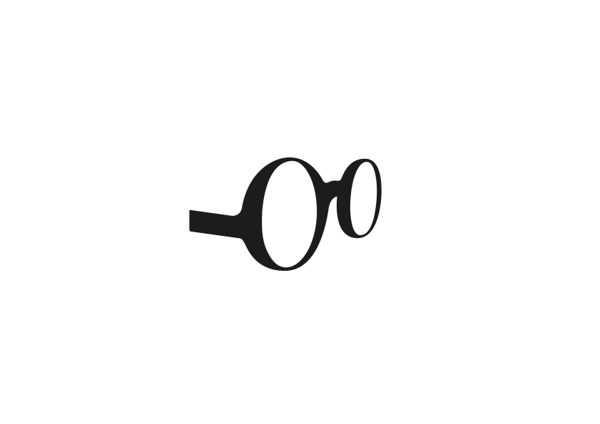
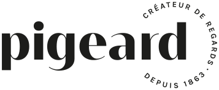

Label OptiKid · spécialistes de la vue des enfants
L’œil de votre enfant
mérite le meilleur
de génération en génération

0–10 ans
L’âge où la vision
se construit
se construit
6
Engagements : formation,
choix, ajustage, suivi
choix, ajustage, suivi
3
Magasins dans le Perche,
un accueil sur mesure
un accueil sur mesure
Chez Pigeard, nous prenons à cœur le soin de la vue des enfants. Nous avons développé cette spécialisation au travers de formations et d’un label national : OptiKid.
Un corner spécifique lui est réservé et un accompagnement sur-mesure lui permet de se sentir bien chez nous : monture ajustée à sa morphologie, verres choisis avec l’ophtalmologiste, retouches et suivi aussi souvent qu’il le faut. Confier la vue de votre enfant à un opticien Pigeard, c’est lui assurer qu’il conservera son regard d’enfant.


Nogent-le-Rotrou
4 rue Gouverneur · 28400
02 37 52 03 39
Lundi : 9h30–12h30 · 14h–18h
Mardi au vendredi : 9h–12h30 · 14h–19h
Samedi : 9h–12h30 · 14h–18h
Mardi au vendredi : 9h–12h30 · 14h–19h
Samedi : 9h–12h30 · 14h–18h
Brou
1 place d’Armes · 28160
02 37 47 05 29
Fermé le lundi
Mardi au vendredi : 9h–12h · 14h–19h
Samedi : 9h–12h30 · 14h–18h
Mardi au vendredi : 9h–12h · 14h–19h
Samedi : 9h–12h30 · 14h–18h
La Loupe
10 place de l’Hôtel de Ville · 28240
02 37 81 07 12
Fermé le lundi
Mardi au vendredi : 9h–12h · 14h–19h
Samedi : 9h–12h30 · 14h–18h
Mardi au vendredi : 9h–12h · 14h–19h
Samedi : 9h–12h30 · 14h–18h
pigeard-opticiens.fr · créateur de regards depuis 1863